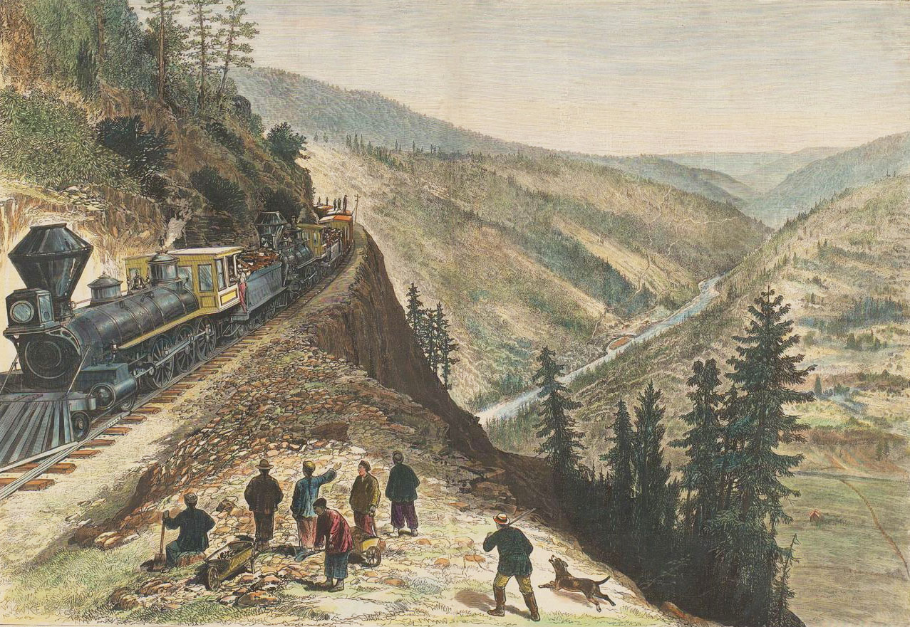

Announcements
March 16, 2026Surprising development: A well-preserved historical artifact from Hung Wah, one of the early Chinese Railroad labor contractors has been discovered. Read an update about this exciting artifact here.
August 31, 2020The Chinese Railroad Workers in North America Project at Stanford University has successfully completed its study, research, and writing. In 2012 when we began our work, we knew we faced formidable research challenges, but the dedicated and determined work of hundreds of scholars, students, and volunteers from around the world helped us recover Chinese railroad worker history unprecedented in richness and comprehensiveness. Our interpretations of culture and scholarship provided original insights into that central experience in Chinese American history and our efforts continue to attract international attention and inspire further efforts to see that the workers receive their due recognition. We are enormously gratified by the warm reception we have received. Though we recognize that much remains to be learned about the Chinese Railroad workers who built the first transcontinental railroad across the United States and other rail lines throughout North America, the further recovery of their histories now falls to others. As of September 1, 2020, the Project will no longer be active. We will also not regularly maintain this website, though we will continue to make it available as a resource for scholars, the public, and students.
Links on our site of popular interest include:
Oral Histories and Interviews
Digital Visualization
Publications
Resources for Teachers
Frequently Asked Questions
We thank our many friends, supporters, and collaborators who helped make this project a success over the years!
___________________________________________________________________
Project introduction
Between 1864 and 1869, thousands of Chinese migrants toiled at a grueling pace and in perilous working conditions to help construct America’s first Transcontinental Railroad. The Chinese Railroad Workers in North America Project sought to give a voice to the Chinese migrants whose labor on the Transcontinental Railroad helped to shape the physical and social landscape of the American West. The Project coordinated research in North America and Asia in order to publish new findings in print and digital formats, support new and scholarly informed school curriculum, and participate in conferences and public events.
2019 marks the 150th anniversary of the introduction of large numbers of Chinese workers on the construction of the first transcontinental railway across North America. May 10, 2019 is the 150th anniversary of Leland Stanford’s driving the famous “golden spike” to connect the Central Pacific and Union Pacific at Promontory Summit, Utah, to complete the line. The labor of these Chinese workers (who eventually numbered between 10-12,000 at any one moment) was central to creating the wealth that Leland Stanford used to found Stanford University. But these workers have never received the attention they deserve. We know relatively little about their lives. What led them to come to the United States? What experiences did they have in their arduous work? How did they live their daily lives? What kinds of communities did they create? How did their work on the railroad change the lives of their families in China and how did it change the lives of the workers themselves, both those who returned to China or went elsewhere after the railroad’s completion and those who stayed in the U.S.?
The Project produced new analysis of how they contributed to shaping the physical and social landscapes of the American West. The sesquicentennial anniversaries of the railroad’s construction and completion provided an unprecedented opportunity to launch a major evaluation of their experiences. The Project brought together historians and other scholars in a range of disciplines in North America and in Asia to locate new historical materials and develop a multi-disciplinary approach to understanding and appreciating this long neglected history. While the focus of the project is the Chinese railroad workers, the Project also includes research on the lives that these individuals lived during the decades after the railroad was completed. In addition to recovering an unjustly neglected chapter of history of special significance for Stanford University, this transnational, collaborative, multi-year research project has pioneered new ways of exploring the shared past of China and the United States.
The Chinese Railroad Workers Project has produced a body of scholarship based on new materials and in-depth analysis of the Chinese railroad worker experience in America. The history of the Chinese in the U.S. from the nineteenth to early twentieth century is a transnational story that should be told from both U.S. and Chinese perspectives. This project’s unprecedented international team of scholars in multiple disciplines in North America and Asia enables new research and publications on the Chinese in America from both U.S. and Chinese vantage points.
The co-directors of the project are Gordon H. Chang, the Olive H. Palmer Professor of Humanities, Professor of History, and former Director of Stanford’s Center for East Asian Studies, and Shelley Fisher Fishkin, the Joseph S. Atha Professor of Humanities, Professor of English, and Director, Stanford’s Program in American Studies.
The project’s original co-organizers were Evelyn Hu-DeHart, Professor of History, Brown University & Stanford alumna, and Dongfang Shao, former Director of Stanford’s East Asia Library and now chief of the Asian Division, Library of Congress.
Stanford University Provost delivers remarks on the occasion of the Chinese Railroad Workers in North America Project at Stanford’s commemoration of the 150th Anniversary of the Golden Spike, and the Chinese workers, April 11, 2019, Stanford University. Event Recap. See More.
Contact
Project leaders may be reached via their Stanford University affiliation.
Press / Announcements
The Chinese Railroad Workers in North America Project in the News